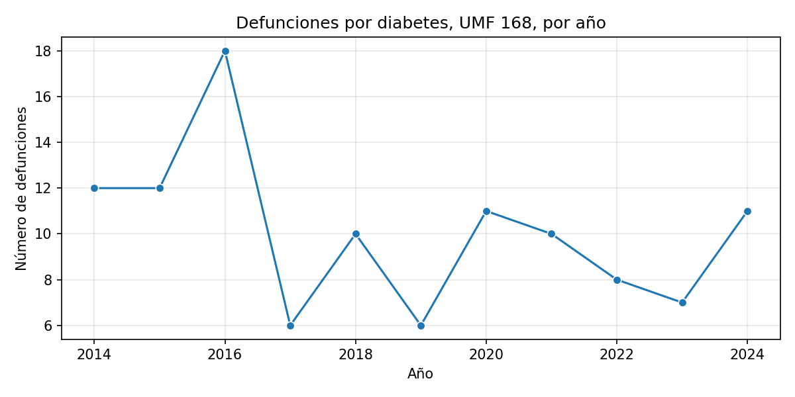
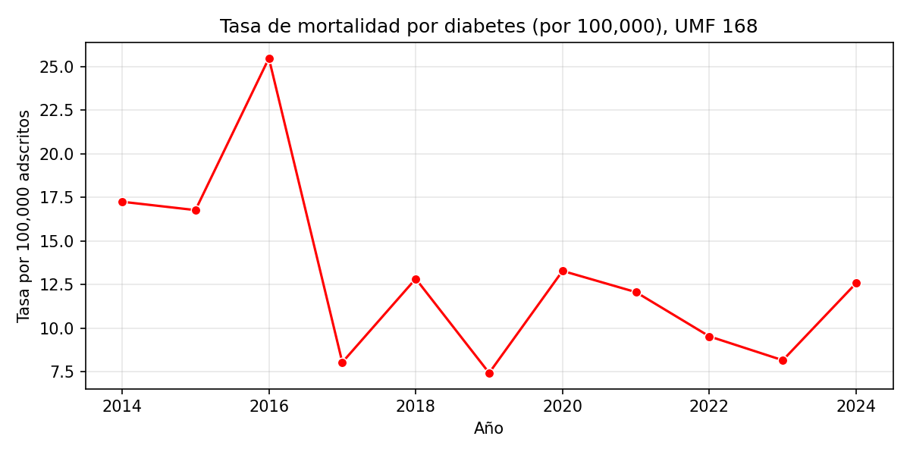

Ámbito: UMF 168, población adscrita a Medicina Familiar (PAMF).
Periodo: 2014–2024.
Indicador: Defunciones por diabetes y tasa de mortalidad por 100,000 adscritos.
| Anio | defunciones_totales | poblacion_total | tasa_mortalidad_100k |
|---|---|---|---|
| 2014 | 12 | 69557 | 17.25 |
| 2015 | 12 | 71571 | 16.77 |
| 2016 | 18 | 70610 | 25.49 |
| 2017 | 6 | 74707 | 8.03 |
| 2018 | 10 | 77948 | 12.83 |
| 2019 | 6 | 80839 | 7.42 |
| 2020 | 11 | 82840 | 13.28 |
| 2021 | 10 | 82938 | 12.06 |
| 2022 | 8 | 84031 | 9.52 |
| 2023 | 7 | 85875 | 8.15 |
| 2024 | 11 | 87435 | 12.58 |
Nota: La tasa se calcula como (defunciones / población adscrita PAMF en junio) × 100,000.


La mortalidad por diabetes en la UMF 168 muestra un pico claro en 2016, con la tasa más alta del periodo. A partir de 2017 las tasas se mantienen en un rango moderado (aprox. 7–13 defunciones por 100,000 adscritos), con ligera variabilidad año con año. La población adscrita ha aumentado de alrededor de 70 mil a más de 87 mil personas, por lo que el uso de tasas permite una mejor comparación temporal que los números absolutos.
Fuente: DAS_DM (MORTA_DIABETES, tb_poblacion). Cálculos propios.